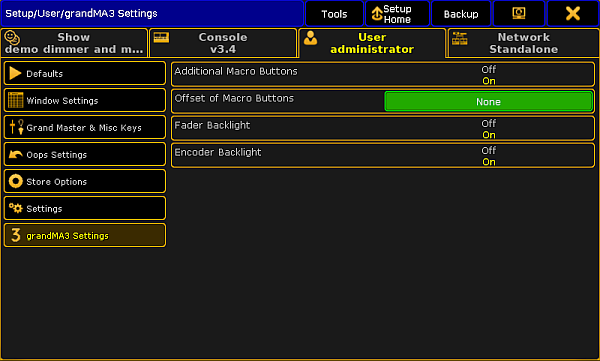

grandMA3 Settings
If you run the grandMA3 console in Mode2, the Setup displays grandMA3 Settings in User.
- To open the Setup, tap Setup on screen 1.
For more information see Screen Layout – Screen 1.
- In the column User tap grandMA3 Settings.
- grandMA3 settings open.

Open grandMA3 settings
- To disable additional Macro Buttons displayed in screen 2 and 3, tap Additional Macro Buttons.
- To set the start of the Macro Buttons, tap Offset of Macro Buttons.
- The calculator opens.
- Type the number with which the Macro Buttons will start.
- To disable the backlight of the faders, tap Fader Backlight.
- To disable the backlight of the dual encoders, tap Encoder Backlight.
Important:
The encoder bar influences the backlight color of the first four dual encoders. Dual encoder 5 is always white.
The grandMA3 settings are made.
Important:
- Adjust the intensity of faders, executor knobs, and dual encoders in Console - Desk Lights - Intensity Exec LED.